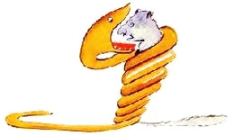
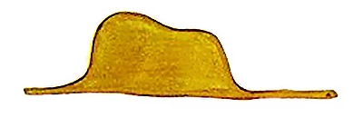
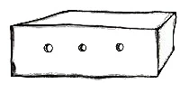
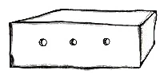

Глава 1
Когда мне было шесть лет, в книге под названием "Правдивые истории", где рассказывалось про девственные леса, я увидел однажды удивительную картинку. На картинке огромная змея - удав - глотала хищного зверя. Вот как это было нарисовано:

В книге говорилось: "Удав заглатывает свою жертву целиком, не жуя.
После этого он уже не может шевельнуться и спит полгода подряд, пока не переварит пищу".
Я много раздумывал о полной приключений жизни джунглей и тоже нарисовал цветным карандашом свою первую картинку.
Это был мой рисунок № 1. Вот что я нарисовал:

Тут я потерял терпение - ведь надо было поскорее разобрать мотор - и нацарапал вот что:

И сказал малышу:

И сказал малышу:
- Вот тебе ящик. А в нем сидит твой барашек.
Но как же я удивился, когда мой строгий судья вдруг просиял - Вот такого мне и надо! Как ты думаешь, много он ест травы?
- А что?
- Ведь у меня дома всего очень мало..
- Ему хватит. Я тебе даю совсем маленького барашка.
- Не такого уж маленького... - сказал он, наклонив голову и разглядывая рисунок. - Смотри-ка! Мой барашек уснул...